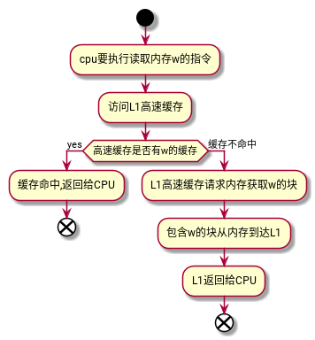

高速缓存
Table of Contents
| 类型 | 缓存什么 | 被缓存在何处 | 延迟(周期数) | 由谁管理 |
|---|---|---|---|---|
| CPU 寄存器 | 4字节或8字节 | 芯片上的CPU寄存器 | 0 | 编译器 |
| TLB | 地址翻译 | 芯片上的TLB | 0 | 硬件MMU |
| L1高速缓存 | 64字节块 | 芯片上的L1高速缓存 | 4 | 硬件 |
| L2高速缓存 | 64字节块 | 芯片上的L2高速缓存 | 10 | 硬件 |
| L3高速缓存 | 64字节块 | 芯片上的L3高速缓存 | 50 | 硬件 |
| 虚拟内存 | 4KB页 | 主存 | 200 | 硬件+OS |
| 缓冲区缓存 | 部分文件 | 主存 | 200 | OS |
| 磁盘缓存 | 硬盘扇区 | 磁盘控制器 | 100 0000 | 控制器固件 |
| 网络缓存 | 部分文件 | 本地磁盘 | 10 000 000 | NFS客户 |
| 浏览器缓存 | Web页 | 本地磁盘 | 10 000 000 | Web浏览器 |
| Web缓存 | Web页 | 远程服务器磁盘 | 1 000 000 000 | Web代理服务器 |
1 介绍
根据机械原理, 较大的存储设备要比较小的存储设备运行的慢, 典型的例如磁盘和内存, 磁盘容量要比内存大的多, 但是, cpu从内存读取数据的开销, 要比从磁盘大的多.
高速缓存的设计用于存储cpu近期可能会需要的信息, 用于缓解内存数度慢跟不上cpu读写速度要求的矛盾. 将cpu最近可能会用到的信息(数据或者指令)从内存复制到高速缓存中, 当cpu下次访问时, 直接从高速缓存读取, 提高读取速度, 使得cpu运行更加高效.
高速缓存远远小于内存的容量, 那么高速缓存中就只能容纳内存的一小部分信息. cpu有多大的概率可以从高速缓存中得到原本应当从内存中获取的信息, 是评价高速缓存运行性能的关键指标, 被称为cache的命中率.
为了提高命中率, 必须找出一套方案, 从cache的读写原理, cache的容量设置, 确定cache存储单元与内存哪一个单元是对应关系, 内存和cache每次交换数据的单位量, 交换的时刻, cache介入计算机系统中的方式等多方面, 来解决cache速度、命中率等一系列问题.
L1, L2, L3三级缓存. L1高速缓存的容量最小, 位于cpu芯片上, 其访问速度和寄存器相当. L2高速缓存容量
2 运行原理
高速缓冲存储器的运行原理, 与内存的运行原理有很大区别. 内存存储器, 是建立在每个内存地址对应内存的一个存储单元这一关系之上的. 在计算机程序中, 要使用内存某单元中的数据, 必须在指令中给出该单元的地址. 读操作时, 给出这一地址后, 通过译码电路, 就选中主存中欲读的一个存储单元, 执行读操作. 而高速缓冲存储器的运行原理则完全不同，由于其存储容量很小, 无法通过对原本用于读内存的地址直接进行译码来选择一个CACHE单元. 那该用什么办法找到该内存单元所对应的CACHE单元呢? 也许最简单的办法, 是合理设计CACHE存储器的组织形式.
例如将cache存储单元分为三部分:
- cache的数据字段 保存从内存中复制过来的数据, 由cpu第一次读取内存是完成, 在读取内存的同时, 顺便将该内容写入高速缓存.
- cache的标志字段 保存相应的内存单元的地址内容, 在复制内存的数据时, 把内存地址保存在此字段, 当cpu要读取内存时, 先从高速缓存查找.
- cache的有效位 用来标识数据字段的内容是否有效, 为0表明cache单元数据无效, 为1表明该单元已被占用, 内容有效.
以上只是简单描述的高速缓存的简单原理.
3 通用的高速缓存存储器组织结构
把内存单元的数据复制到cache中时, 还要把内存单元的地址, 经过某种函数处理关系后写进cache的标志字段, 这一过程被称为cnache的地址映射.
cache存储器通常使用3种映射方式, 分别是全相连映射、直接映射、组相连映射.
考虑一个计算机系统, 其中每个存储器地址由m位, 则总地址数量为 M=2^m个, 这样高速缓存被组织成一个有 S=2^s个高速缓存组的数组. 每个组包行E个高速缓存行(cache line). 每个行由一个B=2^b字节的数据块(block)组成, 一个有效位表明此行的数据是否有效, 还有t(t=m-(b+s))个标记位(tag bit)(内存地址位数的一个子集), 他们唯一的标识高速缓存的块.
| 参数 | 描述 |
|---|---|
| S=2s | 缓存组的组数量 |
| E | 每个组的行数 |
| B=2b | 每个缓存行的块大小(字节) |
| m=log2(M) | 内存物理地址位数 |
| 衍生参数 | 描述 |
|---|---|
| M=2m | 内存地址的数量 |
| s=log2(S) | 组索引的位数 |
| b=lob2(B) | 块偏移的位数 |
| t=m-(s+b) | 标记位的位数 |
| C=BxExS | 去除有效位和标记位的高速缓存的大小 |
3.1 高速缓存通用组织形式

Figure 1: 高速缓存组织形式
- 高速缓存(S,E,B,m)的通用组织:
- 高速缓存是一个高速缓存的数组. 每个组包含一个或多个行, 每个行包含一个有效位, t个标记位, B个字节的数据块;
- 高速缓存的结构将m个地址位划分为 t个标记位, s个索引位, b个块偏移位
高速缓存结构可以用元组(S,E,B,m)来描述. 高速缓存的大小C, 指的是所有块大小的总和. 不包含有效位和标记位, C=SxExB.
- 内存地址位m位, S和B将内存地址分为三个字段:
- s个索引位: 组索引位解释为一个无符号整数, 标识内存应该在哪个组中.
- t个标记位: 标识应当在组中的哪一行.
- b个块偏移: 标识B个字节中的数据块的偏移位置
3.2 直接映射高速缓存
高速缓存组中每个组只有一行(E=1)时成为直接映射高速缓存. 结构如下:
Figure 2: 直接映射高速缓存
现在假设由一个系统包含一个CPU,一个寄存器, 一个L1高速缓存,一个内存.cpu读取内存的大致逻辑如下:

高速缓存确定一个请求是否命中, 然后取出被请求的字的过程分为三步: 组选择、行匹配、字抽取。
组选择
高速缓存从w的地址中抽取s个组索引位, 然后解释为对应于组号的无符号整数. 如下图所示.
行匹配
在上一步中, 已经选定了一个组, 接下来确定组中是否有包含w的缓存行. 因为直接映射中, 每个组只有一行, 如果设置了有效位, 且缓存行中的标记位与w地址中的标记位相匹配时, 即缓存命中.
字选择
如果缓存命中, 则w的副本就在缓存行块中的某个位置. 通过w地址中的块偏移找到w副本在缓存行块中的位置.
直接映射高速缓存中不命中时的行替换
缓存不命中时, 需要从存储器层次结构中的下一层取出被请求的块. 用新取出的行替换高速缓存行.
直接映高速缓存中的冲突不命中
高速缓存反复的加载和驱逐相同的高速缓存块的组, 这种现象称为术语 "抖动". 其原因是这些块被映射到的同义个高速缓存组. 这种抖动一般至少会导致速度下降2-3倍.
如果我们意识到此问题, 可以很容易的修复抖动问题. 一个简单方法是可以在数组或者结构的结尾放置B字节的填充.
为何使用地址中间的位作索引
如下图所时, 如果使用高位作索引, 那么一些连续的内存块就会映射到相同的高速缓存块.
如果一个程序有良好的空间局部性, 顺序的扫描一个数组元素, 那么在任意时刻, 高速缓存都只保存着一个块的大小的数组内容, 使用效率降低. 相比较而言, 以中间位作索引, 相邻的块总是映射到不同的高速缓存行.
3.3 组相连高速缓存
直接映射高速缓存中冲突不命中的问题源于每个组只有一行这个限制. 组相连高速缓存放松了这个限制, 每个组都保存有超过一个的高速缓存行. 一个 1<E<C/B的高速缓存通常称为E路组相连高速缓存.

组相连高速缓存中的组选择
与直接映射高速缓存的组选择相同.

组相连高速缓存中的行匹配和字选择
组相连高速缓存的行匹配需要检查多个行的标记位和有效位, 以确定请求的字是否在缓存行集合中.
组中的任何一行都可以包含任何映射到这个组的内存块, 所以高速缓存必须搜索组中的每一行, 以寻找匹配行. 如果找到则命中, 根据块偏移在缓存行的块中选择一个字.
组相连高速缓存中不命中时的行替换
如果缓存不命中时, 从内存中取出块后应该放入高速缓存组的哪一行呢? 如果有空行, 选择空行, 如果没有空行, 那么选择一个cpu不会很快引用的行来替换.
简单的策略时随机替换,还有一些副在的策略, 最不常使用策略, 最近最少使用策略……
3.4 全相连高速缓存
全相连高速缓存是由一个包含所有高速缓存行的组(E=C/B)组成.
全相连高速缓存的组选择
只有一组, 不用选. 地址中没有索引位, 只有标记位和块偏移.
全相连高速缓存的行匹配和字选择
与组相连高速缓存相同.
由于高速缓存电路需要并行的搜索许多相匹配的标记, 构造一个又大又快的相连高速缓存很困难, 而且比较昂贵. 因此, 全相连高速缓存只适合做小的高速缓存, 例如虚拟内存系统中的翻译备用缓冲器(TLB), 用以缓存页表项.
3.5 写的问题
如果写一个已经缓存了w的高速缓存. 在高速缓存更新后如何更新低一层的层次结构的副本呢. 最简单的方法就是直写,缺点是每次写都会引起总线流量. 另一种方法是write-back, 尽可能推迟更新, 只有当替换算法要驱逐这个修改过的块时, 才把他写入紧接着的第一层中, 可以显著的减少总线流量, 缺点时增加了复杂性. 高速缓存必须为每个缓存行维护一个额外的修改位, 表明是否被修改.
如何处理写不命中呢. 一种方法是写分配, 加载相应的低一层中的块到高速缓存中, 然后更新高速缓存块. 写分配试图利用写的空间局部性, 缺点是每次不命中都会导致一个块从低一层传送到高速缓存. 另一种方法是非写分配, 避开高速缓存, 直接写入低一层中. 直写通常是非写分配, write-back通常是写分配.
4 一个真实的高速缓存层次结构的剖析
以上只介绍了高速缓存只保存数据. 实际上, 高速缓存既保存数据, 也保存指令. 只保存指令的称为i-cache. 只保存程序数据的为d-cache. 既保存指令也保存数据的高速缓存称为统一的高速缓存. 现代处理器包括独立的i-cache和d-cache. 两个独立的高速缓存能够同时读取指令和数据.
下图给出了 Intel Corei7处理器的高速缓存层次结构. 每个cpu有4个核. 每个核有自己私有的L1 i-cache、L1 d-cache和L2统一高速缓存。 所有高速缓存共享L3统一高速缓存。 这个层次结构所有的SRAM高速缓存存储器都在CPU芯片上。
| 高速缓存类型 | 访问时间（周期） | 高速缓存大小（C） | 相连度（E） | 块大小（B） | 组数（S） |
|---|---|---|---|---|---|
| L1 i-cache | 4 | 32KB | 8 | 64B | 64 |
| L1 d-cache | 4 | 32KB | 8 | 64B | 64 |
| L2 统一高速缓存 | 10 | 256KB | 8 | 64B | 512 |
| L3 统一高速缓存 | 40～75 | 8MB | 16 | 64B | 8192 |
5 高速缓存参数的性能影响
衡量指标有：
- 不命中率
- 命中率
- 命中时间
- 不命中处罚
- 高速缓存大小的影响 较大的高速缓存可能会提高命中率，但是通常大存储器运行要慢一些，所以会增加命中时间。这就是为什么 L1高速缓存比L2高速缓存小， L2小于L3的原因。
- 块大小的影响 较大的块能利用程序中可能存在的空间局部性， 提高命中率。对于给定的高速缓存大小， 块越大意味着高速缓存行越少。会损害时间局部性比空间局部性更好的程序的命中率。较大的块对不命中处罚也有负面影响， 块越大传送时间越长。
- 相连度的影响 E代表高速缓存组中的缓存行数。较高的相连度会降低高速缓存由于冲突不命中出现抖动的可能性。 但较高的相连度会造成较高的成本。实现较昂贵，且很难使速度变快。每一行需要更多的标记位，LRY状态位和额外的控制逻辑。较高的相连度还会增加命中时间和不命中处罚。
- 写策略的影响 直写高速缓存比较容易实现，而且能使用独立于高速缓存的写缓冲区， 用来更新内存。此外读不命中开销没那么大，因为不会触发内存写。另一方面，写回高速缓存引起的传送比较少，它允许更多的到内存的带宽用于执行DMA的I/O设备。此外，越往层次结构下面走， 传送时间增加，减少传送的数量就变得更加重要。一般而言，高速缓存越往下层，越可能使用写回而不是直写。
6 编写高速缓存友好的代码
- 让最常见的情况运行的快。程序通常把大部分时间都花在少量的核心函数上，而这些函数通常把是大部分时间都花在了少量循环上。所以把注意力集中在核心函数里的循环上，而忽略其他部分。
- 尽量减少每个循环内部的缓存不命中数量。在其它条件相同情况下，不命中率较低的循环运行的更快。
int sumvec (int v[N]) { int i, sum = 0; for (i = 0; i < N; i++) sum += v[i]; return sum; }
假设一个高速缓存的块大小位B字节， 那么一个步长位k的引用模式（k以字位单位）平均每次循环迭代会有min(1, (wordsize*k)/B)次缓存不命中。 当k=1时取最小值， 所以v步长为1却是时高速缓存友好的。例如假设v是块对齐的，字位4字节，高速缓存块为4个字，高速缓存初始为空。然后，无论什么杨的高速缓存结构， 对v的引用都会得到下面的命中和不命中模式：
| v[i] | i=0 | i=1 | i=2 | i=3 | i=4 | i=5 | i=6 | i=7 |
|---|---|---|---|---|---|---|---|---|
| 访问顺序，h命中，m不命中 | 1[m] | 2[h] | 3[h] | 4[h] | 5[m] | 6[h] | 7[h] | 8[h] |
这个例子中，对v[0]的引用不命中，然后包含v[0]~v[3]的块被从内存load到高速缓存中。因此接下来三个引用都会命中。加载v[4]时也是如此。
上述示例说明了编写高速缓存友好代码的两个重要问题：
- 对局部变量的反复引用是好的，因为编译器能够将他们缓存在寄存器文件中（时间局部性）。
- 步长为1的引用模式是好的，因为存储器层次结构中所有层次上的缓存都是将数据存储为连续的块（空间局部性）。
在对多为数据进行操作的程序中，空间局部性尤为重要。如下面的例子：
int sumarrayrows (int a[M][N]) { int i, j, sum = 0; for (i = 0; i < M; i++) { for (j = 0; j < N; j++) { sum += a[i][j]; } } return sum; }
由于C语言以行优先顺序存储数组，所以这个行数中的内循环有与上一个例子（sumvec）一样好的步长为1的访问模式。假设我们对这个高速缓存做对sumvec一样的假设。那么对数组a的引用会得到下面的命中和不命中模式：
| a[i][j] | j=0 | j=1 | j=2 | j=3 | j=4 | j=5 | j=6 | j=7 |
|---|---|---|---|---|---|---|---|---|
| i = 0 | 1[m] | 2[h] | 3[h] | 4[h] | 5[m] | 6[h] | 7[h] | 8[h] |
| i = 1 | 9[m] | 10[h] | 11[h] | 12[h] | 13[m] | 14[h] | 15[h] | 16[h] |
| i = 2 | 17[m] | 18[h] | 19[h] | 20[h] | 21[m] | 22[h] | 23[h] | 24[h] |
| i = 3 | 25[m] | 26[h] | 27[h] | 28[h] | 29[m] | 30[h] | 31[h] | 32[h] |
如果我们稍稍修改以下循环的次序：
int sumarraycols (int a[M][N]) { int i, j, sum = 0; for (j = 0; j < M; j++) { for (i = 0; i < N; i++) { sum += a[i][j]; } } return sum; }
这种情况下，我们是一列一列的扫描数组。 如果幸运的话，整个数组都在高速缓存中，那么也会有相同的不命中率（1/4）。不过，如果数组比高速缓存要大， 那么每次对a[j][i]的访问都不会命中！
| a[i][j] | j=0 | j=1 | j=2 | j=3 | j=4 | j=5 | j=6 | j=7 |
|---|---|---|---|---|---|---|---|---|
| i = 0 | 1[m] | 2[m] | 3[m] | 4[m] | 5[m] | 6[m] | 7[m] | 8[m] |
| i = 1 | 9[m] | 10[m] | 11[m] | 12[m] | 13[m] | 14[m] | 15[m] | 16[m] |
| i = 2 | 17[m] | 18[m] | 19[m] | 20[m] | 21[m] | 22[m] | 23[m] | 24[m] |
| i = 3 | 25[m] | 26[m] | 27[m] | 28[m] | 29[m] | 30[m] | 31[m] | 32[m] |
较高的不命中率对运行时间有显著影响。例如在桌面机器上，sumarrayrows运行速度比sumarraycols快25倍。总之，我们应当注意程序中的局部性，试着编写利用局部性的程序。
在程序中利用局部性的技术：
- 将注意力集中在内循环上，大部分计算和内存访问都发生在这里。
- 通过按照数据对象存储在内存中的顺序、以步长为1来读取数据，从而使得程序中的空间局部性最大。
- 一旦从存储器中读入了一个数据对象，就尽可能的多使用它，从而使得程序中的时间局部性最大。